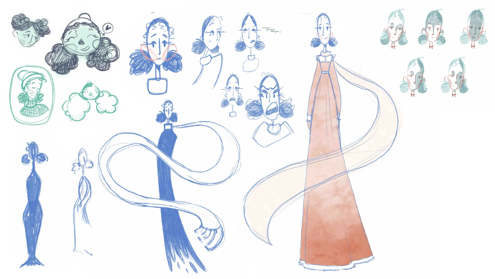
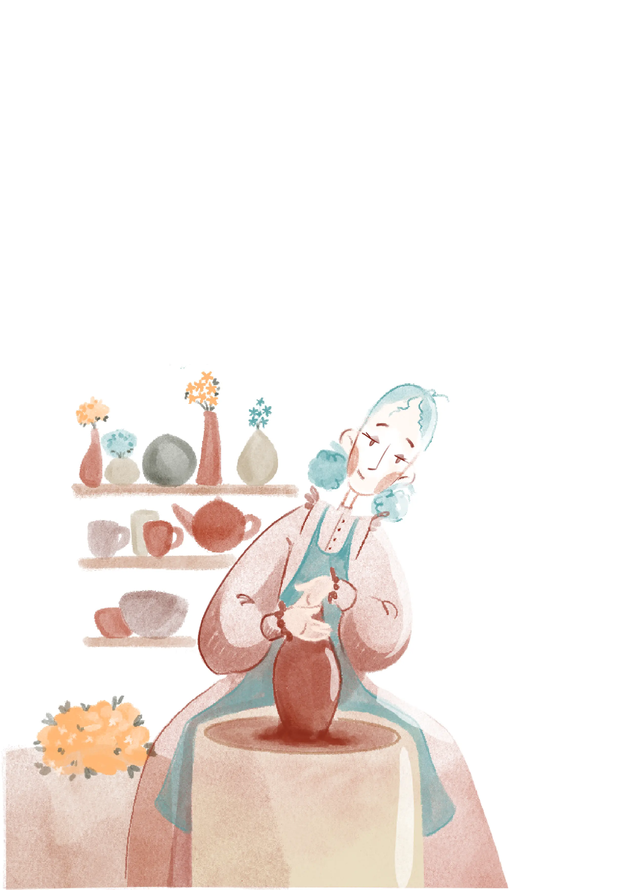
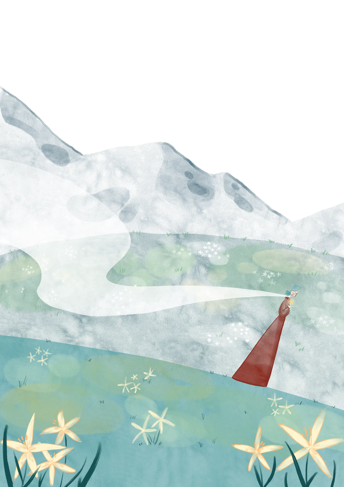
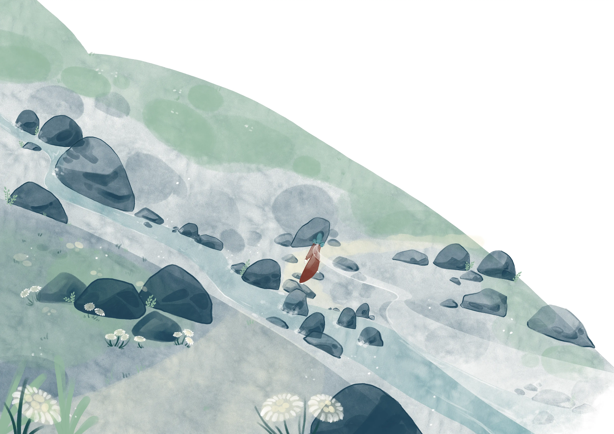
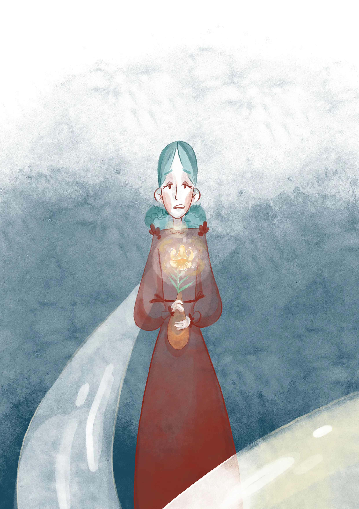
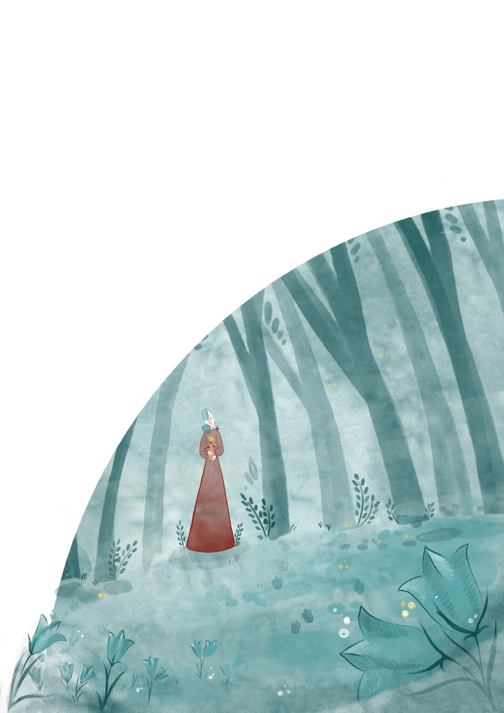
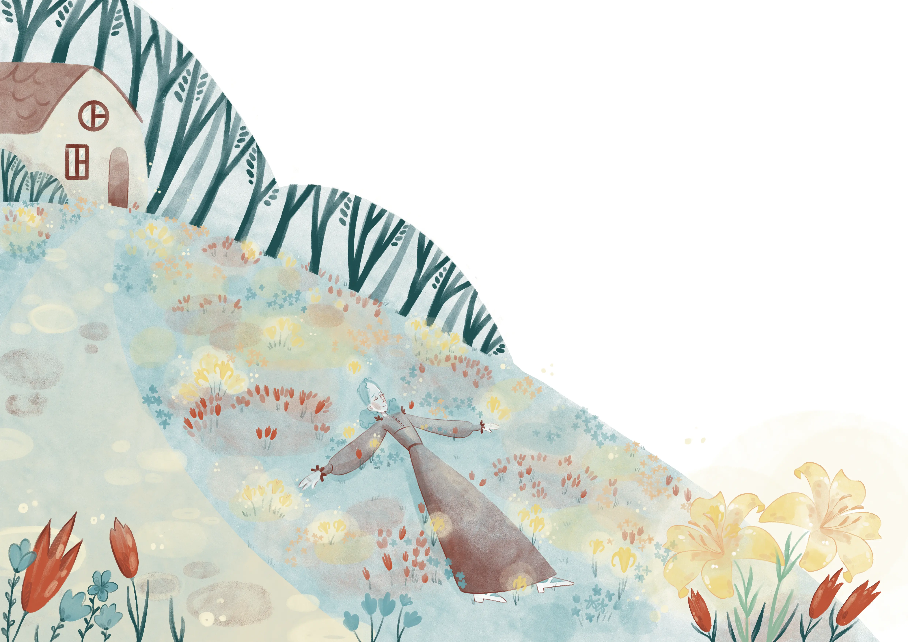

Illustrated book project
Anja
This project started with a few character design sketches. I decided to develop her further. That's how the story of a girl named Anja appeared. She preserves flowers in vases with her magic and sets off on a journey to find a special flower.






The story became a children's book with more than 20 illustrations. To explore the character further, I created several animations set in the book's world and even made a stop-motion puppet.

